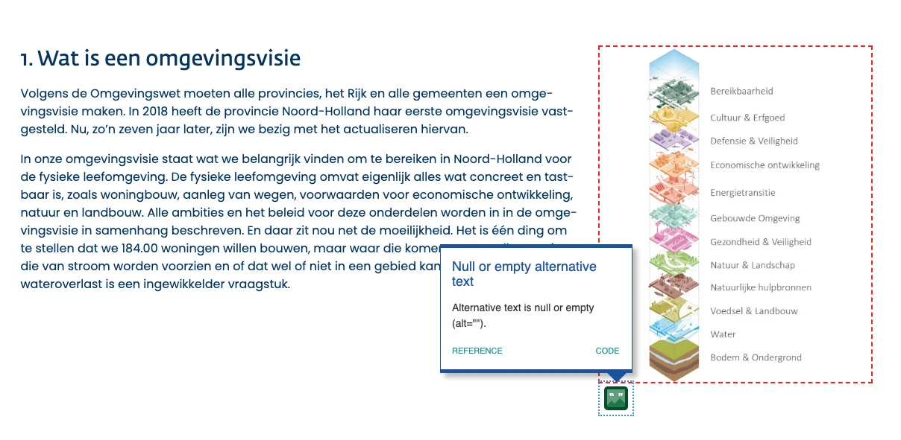
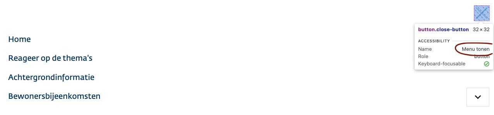
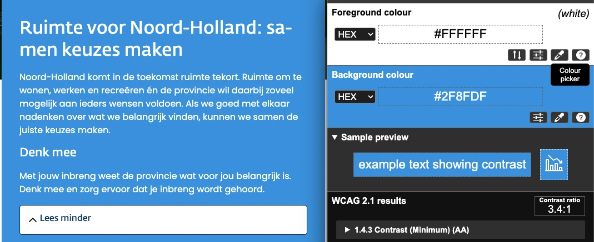
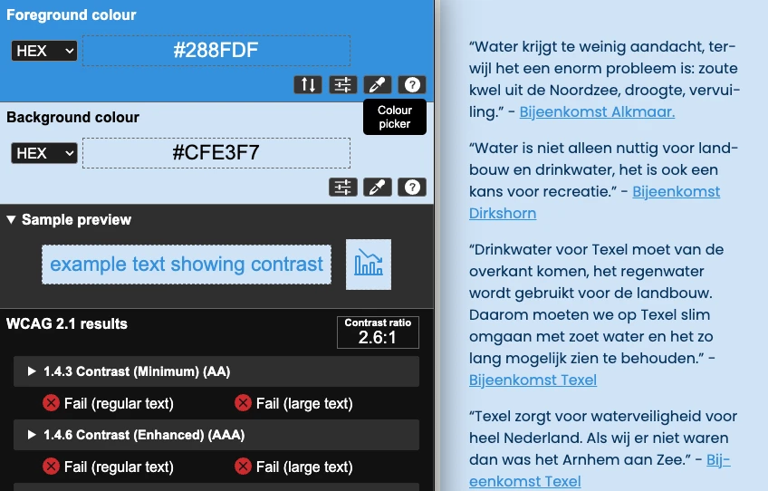
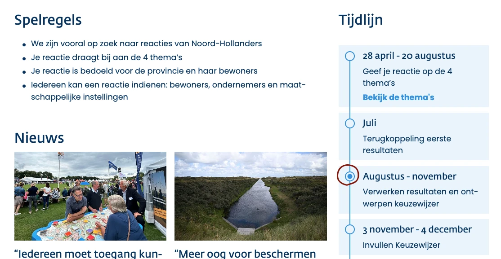
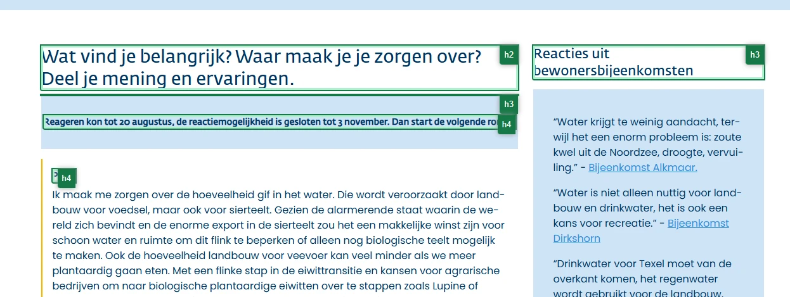
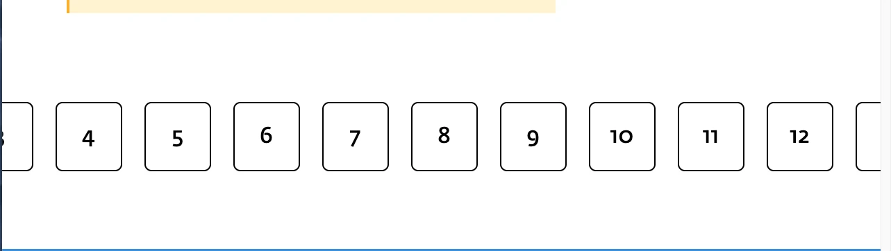
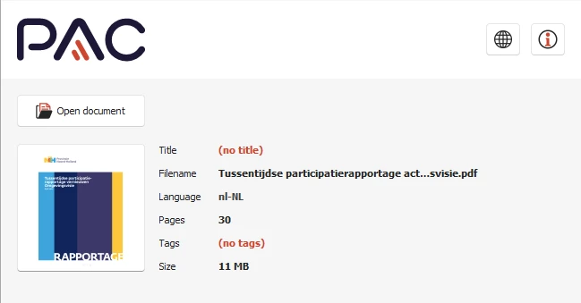
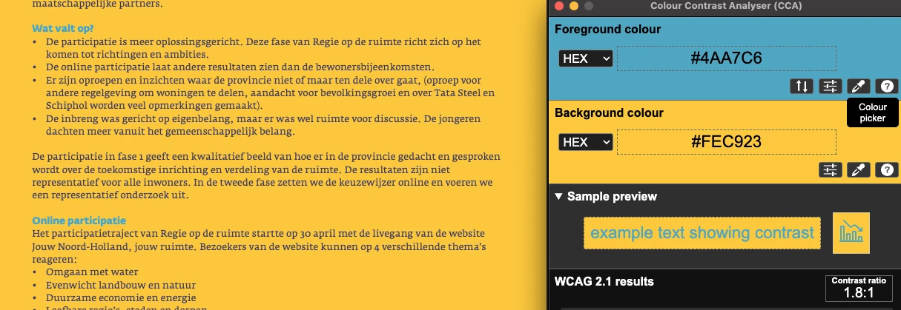

Link naar pagina: https://jouwnoord-holland.nl/jouwruimte/404 Geen nieuwe bevindingen
Samenvatting
Wij hebben de hercontrole van website jouwnoord-holland.nl/jouwruimte uitgevoerd op 16 oktober 2025. Op dit moment zijn 45 van de 55 succescriteria als voldoende beoordeeld. In dit rapport lees je wat er bij de overige 10 nog fout gaat, en hoe je dat kunt verbeteren. De website is op 3 succescriteria verbeterd.
In opdracht van

-
Voldoet
-
Afgekeurd
55
Totaal
- voldoet
Impact
Klein: 0
Medium: 0
Groot: 0
Type
Content: 0
Techniek: 0
Waarneembaar
- van 20
Bedienbaar
- van 20
Begrijpelijk
- van 13
Robuust
- van 2
Deze SC zijn afgekeurd:
Over dit onderzoek
- Onderzocht door
- Proper Access
- Opdrachtgever
- provincie Noord-Holland
- Leverancier techniek
- n.v.t. Dit is een volledig onderzoek.
- Datum rapport
- 16 oktober 2025
- Standaard
- WCAG 2.2
- Methodologie
- WCAG-EM
Scope van het onderzoek
- Alle pagina's op de website jouwnoord-holland.nl/jouwruimte
- Alle PDF's op de website jouwnoord-holland.nl/jouwruimte
Buiten scope:
- Subwebsite(s) waarbij de HTML en/of het systeem afwijkt van de onderzochte website
- De van derden afkomstige inhoud (wettelijke uitzondering voor de overheid)
Basisniveau toegankelijkheidsondersteuning
- Mozilla Firefox, versie 142
- Google Chrome, versie 140
- Apple Safari, versie 18
- PAC software to test PDF
- NVDA schermlezer in combinatie met Firefox
- VoiceOver schermlezer in combinatie met Safari
- Andere gangbare browsers en hulpapparatuur
Technologieën van de website
- HTML
- CSS
- JavaScript
- WAI-ARIA
- SVG
Voortgang opgeloste bevindingen
Samenwerken met je team
Exporteer alle bevindingen als CSV-bestand. Je kunt het in een (online) spreadsheet inladen om met je team samen te werken.
Importeer in Jira
Exporteer alle bevindingen als Jira-compatibel CSV-bestand. Je kunt het direct importeren via Jira > Issues > Import issues from CSV.
Zelf bijhouden in de browser
Houd per bevinding bij of het is opgelost. Je voortgang wordt opgeslagen in jouw browser. Niemand anders kan je resultaat zien.
0 van
0 opgelost
Gevonden problemen
Filter bevindingen op:
Impact:
Type:
Status:
Geen bevindingen gevonden voor dit filter.
Link naar pagina: https://jouwnoord-holland.nl/jouwruimte/achtergrondinformatie
#1 - Alternatieve tekst van een informatieve afbeelding is leeg
Op deze pagina staan onder het kopje 'Meer informatie?' twee informatieve afbeeldingen met een leeg alt-attribuut.

Op deze pagina staan onder de kop 'Meer informatie?' twee informatieve afbeeldingen met een leeg alt-attribuut.
Complexe afbeeldingen zoals infographics en schema’s bevatten veel informatie die niet binnen de 150 karakters van de alternatieve tekst past. Die informatie maak je toegankelijk door twee tekstalternatieven te bieden: een korte en een lange beschrijving.
Oplossing:
De korte beschrijving, meestal de alternatieve tekst, moet de locatie van de lange beschrijving aangeven. De lange beschrijving kun je als tekst op de pagina zelf plaatsen, maar deze mag ook op een andere pagina of in een downloadbaar bestand staan.
#2 - Kleur is gebruikt als enige manier om informatie over te dragen
Op deze pagina staat onder het kopje 'Meer informatie?' een grafiek. Kleur wordt gebruikt om informatie weer te geven. Zie de legenda en de balken in de grafiek. Alleen mensen die de kleuren kunnen zien en van elkaar kunnen onderscheiden zien welke balk / lijn bij welke categorie in de legenda hoort. Dit kan opgelost worden door naast kleur bijvoorbeeld ook verschillende soorten arcering te gebruiken.
Oplossing:
Gebruik naast kleur bijvoorbeeld ook verschillende soorten arcering.
#3 - Er is maar één manier om een webpagina te vinden
Er is geen andere manier om pagina's van deze website te vinden. Alle pagina’s die op de website staan moeten op meerdere manieren gevonden kunnen worden. Dat mag via een zoekveld, een sitemap of een inhoudsopgave.
Oplossing:
Voeg een zoekveld of een sitemap toe. Tijdens de hercontrole is gebleken dat een link naar de sitemap aan de footer is toegevoegd. Echter deze link werkt niet.
#4 - Toetsenbordfocus gaat buiten het mobiele menu
Wanneer de website op een klein scherm wordt bekeken, verschijnt de menuknop bovenaan de pagina. Deze knop opent een mobiel menu. Momenteel kunnen bezoekers met behulp van het toetsenbord uit het mobiele menu navigeren. De toetsenbordfocus verschuift dan naar de onderliggende pagina, terwijl het menu open blijft.
Oplossing:
Bij dit soort menu’s moet je de toetsenbordfocus goed instellen. Als het menu actief is, moet de focus binnen het menu blijven, en mag deze niet op de onderliggende pagina terechtkomen. Dit kun je op een van de volgende manieren oplossen:
- Hou de focus binnen het menu totdat de bezoeker op de sluitknop heeft geklikt of op de ESC-toets heeft gedrukt.
- Sluit het menu automatisch op het moment dat de toetsenbordfocus eruit gaat.
#5 - Naam van de knop beschrijft niet wat de knop doet
Op kleine schermen sluit een "X" knop met de toegankelijke naam "Menu tonen" het mobiele navigatiemenu wanneer het menu is geopend. Deze toegankelijke naam beschrijft de functie ervan niet.

Op kleine schermen staan in het hoofdmenu pijltjesknoppen met toegankelijke namen zoals 'Toon onderliggende pagina's'. Deze knoppen openen submenu's, maar een blinde bezoeker krijgt geen informatie over of het submenu open of gesloten is, omdat de toegankelijke naam van de knop niet verandert en er geen attribuut is om de status van het submenu aan te geven.
Oplossing:
Voeg een aria-expanded-attribuut toe aan de knop en zorg ervoor dat de toegankelijke naam van de knop wordt bijgewerkt wanneer de functie ervan verandert, zodat gebruikers van schermlezers op de hoogte worden gebracht van de huidige status.
#6 - SC 1.4.3 Kleurcontrast van tekst is te laag (tekst kleiner dan 24px en niet vetgedrukt)
Op verschillende pagina's van de website zijn combinaties van blauw (#2F8FDF, #288FDF) en wit te zien; blauwe tekst op een lichtblauwe (#CFE2F7) achtergrond. De kleurcontrastverhouding is te laag: 2,6:1-3,4:1. Zie bijvoorbeeld de footer op alle pagina's en op pagina's zoals https://jouwnoord-holland.nl/jouwruimte/, https://jouwnoord-holland.nl/jouwruimte/themas/omgaan-met-water, https://jouwnoord-holland.nl/jouwruimte/bewonersbijeenkomsten.


Op pagina's met breadcrumb-navigatie wordt dit geïmplementeerd als een verzameling links, maar de onderliggende structuur en relatie tussen deze links zijn niet semantisch gedefinieerd in de HTML. Zie bijvoorbeeld pagina's https://jouwnoord-holland.nl/jouwruimte/themas/omgaan-met-water, https://jouwnoord-holland.nl/jouwruimte/themas.
Oplossing:
Plaats de links in een nav- of een ul-element.
Link naar pagina: https://jouwnoord-holland.nl/jouwruimte/bewonersbijeenkomsten Alle issues zijn opgelost.
Link naar pagina: https://jouwnoord-holland.nl/jouwruimte/
#7 - Huidige stap in de tijdlijn is alleen visueel aangegeven
Op deze pagina wordt onder het kopje 'Tijdlijn' de huidige stap in de tijdlijn alleen aangegeven door een visuele verandering, maar deze status wordt niet gemarkeerd in de code. Daardoor kunnen mensen die een schermlezer gebruiken niet zien welke stap de huidige is, waardoor belangrijke informatie ontoegankelijk is.

Link naar pagina: https://jouwnoord-holland.nl/jouwruimte/iedereen-moet-toegang-kunnen-hebben-tot-recreatie Geen nieuwe bevindingen
Link naar pagina: https://jouwnoord-holland.nl/jouwruimte/meer-oog-voor-beschermen-drinkwater-recreeren-dicht-bij-huis Geen nieuwe bevindingen
Link naar pagina: https://jouwnoord-holland.nl/jouwruimte/middelbare-scholieren-uit-castricum-denken-mee-over-de-toekomst-van-noord-holland Geen nieuwe bevindingen
Link naar pagina: https://jouwnoord-holland.nl/jouwruimte/achtergrondinformatie/themas/omgaan-met-water
#8 - Kop-element gebruikt voor tekst die geen kop is
De tekst "Reageren kon tot 20 augustus, de reactiemogelijkheid is gesloten tot 3 november. Dan start de volgende ronde." op deze pagina is geen koptekst, maar is ten onrechte gemarkeerd met een h4-element om de lettergrootte te vergroten.

Op deze pagina hebben de knoppen met de tekst "1", "2", "3", enz. in de paginering de functie om de juiste reacties te laden, maar hun toegankelijke namen zijn "1", "2", "3", enz., die hun functie niet nauwkeurig beschrijven. Een blinde bezoeker weet daardoor niet wat deze knop precies doet.
Oplossing:
Voeg tekst toe die deze knop goed beschrijft.
#9 - Huidige pagina in paginering is alleen visueel aangegeven, maar niet in de code
Op deze pagina onderscheidt de paginering onder de zoekresultaten visueel het huidige paginanummer, maar dit onderscheid is niet aanwezig in de HTML-code. Hierdoor kan een schermlezer deze informatie niet doorgeven aan de bezoeker.
Oplossing:
Voeg visueel verborgen tekst toe binnen de knoppen van de huidige pagina die aangeeft dat dit de huidige pagina is. Bijvoorbeeld <span class=”sr-only”>Huidige pagina</span>.
#10 - Bezoekers die inzoomen tot 200% kunnen niet meer alle functies gebruiken
Wanneer de tekst op deze pagina wordt vergroot tot 200%, zijn de eerste en laatste knoppen in de paginering niet zichtbaar.

Link naar pagina: https://jouwnoord-holland.nl/jouwruimte/overheden-en-belangenpartijen-in-gesprek-over-inrichting-noord-holland Alle issues zijn opgelost.
Link naar pagina: https://jouwnoord-holland.nl/jouwruimte/meer-oog-voor-beschermen-drinkwater-recreeren-dicht-bij-huis Link naar PDF: https://www.noord-holland.nl/bestanden/pdf/Ruimtelijke_inrichting/Tussentijdse participatierapportage actualisatie Omgevingsvisie.pdf
#11 - PDF-document heeft geen titel
Zelfs als er een titel op de eerste pagina staat, moet je in de PDF-instellingen ook een documenttitel instellen. Als je een pdf opent in een pdf-lezer (zoals Adobe Acrobat of een browser), zie je de bestandsnaam meestal bovenaan in de titelbalk, bijvoorbeeld document123.pdf. Maar als je een documenttitel in de pdf-metadata instelt, dan wordt die titel in plaats van de bestandsnaam getoond. Dit maakt het document toegankelijker voor bezoekers met verschillende beperkingen. Zij kunnen dan snel en gemakkelijk zien of het document relevant is.

- Open het pdf-document in Adobe Acrobat.
- Ga naar Bestand > Eigenschappen.
- Ga naar het tabblad Beschrijving.
- Vul in het veld Titel een beschrijvende titel in, bijvoorbeeld: "Rapport: Bevolkingscijfers 2023".
- Klik op OK en sla het bestand op.
#12 - Structuur van pdf-document is niet in codes vastgelegd
Dit pdf-document bevat geen codes, waardoor de inhoud niet toegankelijk is voor schermlezers. Bovendien kunnen wij de pdf hierdoor niet volledig onderzoeken. Het gaat om alle succescriteria die met de pdf-codelaag te maken hebben, zoals semantische koppen en alternatieve teksten bij afbeeldingen. Als je dit oplost, is het dus mogelijk dat er nieuwe toegankelijkheidsproblemen ontstaan die nu nog niet aan het licht zijn gekomen.
Oplossing:
Voeg codes toe aan het document die de structuur van het document weergeven.
#13 - Kleurcontrast van kleine tekst is te laag
In het PDF-document worden kleurcombinaties gebruikt waarvan de contrastratio niet voldoet aan de minimale vereisten. Voor tekst tot een lettergrootte van 24 px of vet moet de contrastratio minimaal 4,5:1 zijn en voor grote tekst vanaf 24 px of vet minimaal 3,0:1. Op pagina 2 staan bijvoorbeeld de combinaties blauw (#32A4DF) en geel (#FEC823) of wit. Op pagina 3 staan de combinaties geel (#FEC823) en wit en blauw (#32A4DF) en geel (#FEC823). Op pagina 7 staat de combinatie roze (#F09080) en wit. Op pagina 8 staat de combinatie lichtblauw (#98C9EF) en wit.

Link naar pagina: https://jouwnoord-holland.nl/jouwruimte/praat-mee-over-de-toekomst-van-noord-holland-bijeenkomsten-in-amsterdam-en-purmerend Geen nieuwe bevindingen
Link naar pagina: https://jouwnoord-holland.nl/jouwruimte/achtergrondinformatie/themas Alle issues zijn opgelost.
Link naar pagina: https://jouwnoord-holland.nl/jouwruimte/toegankelijkheid Geen nieuwe bevindingen
Link naar pagina: https://jouwnoord-holland.nl/jouwruimte/bewonersbijeenkomsten/verslag-bewonersbijeenkomst-alkmaar Alle issues zijn opgelost.
Over dit onderzoek
Leeswijzer
Onze rapporten zijn anders. Bij het bespreken van de gevonden problemen volgen wij niet de structuur van de norm, maar die van jouw website of app. Hierdoor kun je gewoon per pagina of scherm aan de slag gaan. Wel zo makkelijk! Je vindt verderop een overzicht van alle pagina’s met problemen.
We geven je bij elk gevonden issue een paar voorbeelden, maar niet een complete lijst. Controleer zelf of het probleem ook nog op andere plekken voorkomt. Zie het rapport als een leidraad.
Gebruikte norm
Dit onderzoek laat zien in hoeverre de website op dit moment voldoet aan WCAG 2.2, niveau A en AA. WCAG staat voor Web Content Accessibility Guidelines. Dit is de internationale norm voor digitale toegankelijkheid. De Europese norm EN 301 549 bevat alle eisen van WCAG op niveau A en AA.
In dit rapport hebben we korte beschrijvingen van de succescriteria uit de norm opgenomen, met een algemene uitleg erbij. Wil je ze helemaal lezen? Bekijk dan de documentatie van WCAG.
Gebruikte onderzoeksmethode
We gebruiken de onderzoeksmethode WCAG-EM van het W3C. Het proces ziet er als volgt uit:
- vaststellen wat binnen en buiten scope valt
- vaststellen welke technologieën zijn gebruikt
- steekproef (sample) samenstellen
- steekproef onderzoeken
- gevonden issues beschrijven
Het grootste deel van het onderzoek doen we met de hand. Voor een deel van de toegankelijkheidseisen gebruiken we automatische tools als ondersteuning, zoals axe-core en Chrome Developer Tools.
Belangrijk om te weten
Dit rapport helpt je om de toegankelijkheid van je website te verbeteren. Maar let op: het is geen definitieve, volledige lijst van alle aanwezige toegankelijkheidsproblemen. Dat zit zo:
Het is een steekproef
Ten eerste is het onderzoek gebaseerd op een steekproef. Die is op een betrouwbare manier genomen, en de meeste problemen zullen daardoor zeker aan het licht komen. Toch kan een probleem net buiten de steekproef vallen. Bij een volgend onderzoek kan het wel ontdekt worden.
Op basis van falsificatie
We beoordelen vanuit het principe van falsificatie. Dat houdt in dat we proberen te bewijzen dat iets niet waar is, in plaats van te bevestigen dat het klopt. ‘Voldoet’ betekent daarom dat we geen reden hebben gevonden om een punt af te keuren. Maar als we later wél een reden vinden, kan het alsnog worden afgekeurd.
Voortschrijdend inzicht
Het komt voor dat de beoordeling van een succescriterium op detailniveau verandert. De norm beschrijft namelijk niet élk mogelijk scenario. Samen met andere onderzoeksbureaus overleggen we hoe we met bepaalde situaties omgaan. Zo kan iets dat nu wordt afgekeurd, soms bij een volgend onderzoek worden goedgekeurd en andersom.
Oplossen leidt tot nieuw probleem
Ten slotte kan het gebeuren dat bij het oplossen van een probleem onbedoeld een nieuw toegankelijkheidsprobleem ontstaat. Dat komt dan bij een volgend onderzoek pas naar voren.
Hoe werkt dit rapport?
Bevindingen bekijken en filteren
Alle gevonden toegankelijkheidsproblemen staan onder Gevonden problemen. Je kunt de bevindingen filteren op:
- Impact (Groot, Medium, Klein, Advies) — hoe ernstig is het probleem voor de gebruiker?
- Type (Content, Techniek) — moet de inhoud of de techniek worden aangepast?
- Status (Open, Opgelost) — welke problemen zijn al verholpen?
Voortgang bijhouden
Je kunt je voortgang op twee manieren bijhouden:
- CSV-export — exporteer alle bevindingen als CSV-bestand en laad het in een (online) spreadsheet om met je team samen te werken.
- Jira-export — exporteer alle bevindingen als Jira-compatibel CSV-bestand. Importeer het via Jira > Issues > Import issues from CSV. Bevindingen worden aangemaakt als bugs met prioriteit op basis van impact.
- Registreer in de browser — activeer deze optie om per bevinding bij te houden of het is opgelost. Je voortgang wordt opgeslagen in je browser. Niemand anders kan je resultaat zien. Let op: de voortgang is gekoppeld aan je browser. Als je een andere browser of een ander apparaat gebruikt, begint de telling opnieuw.
- Plan van aanpak — download een geprioriteerd plan van aanpak om de gevonden problemen stap voor stap op te lossen. Dit is beschikbaar bij audits vanaf maart 2026.
Link naar een specifieke bevinding delen
Bij elke bevinding verschijnt een link-icoon wanneer je er met de muis overheen gaat. Klik op dit icoon om de directe link naar die bevinding te kopiëren. Je kunt deze link plakken in een e-mail of chatbericht, bijvoorbeeld om een vraag te stellen aan Proper Access over een specifiek punt.